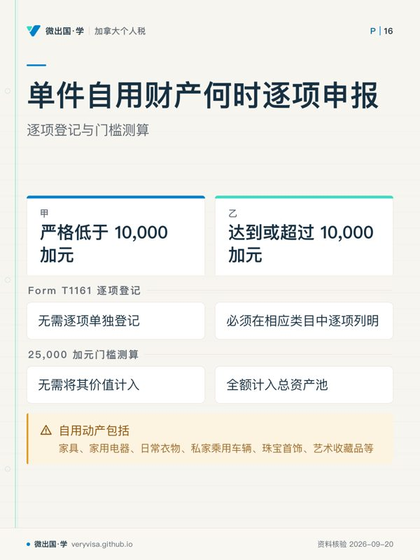
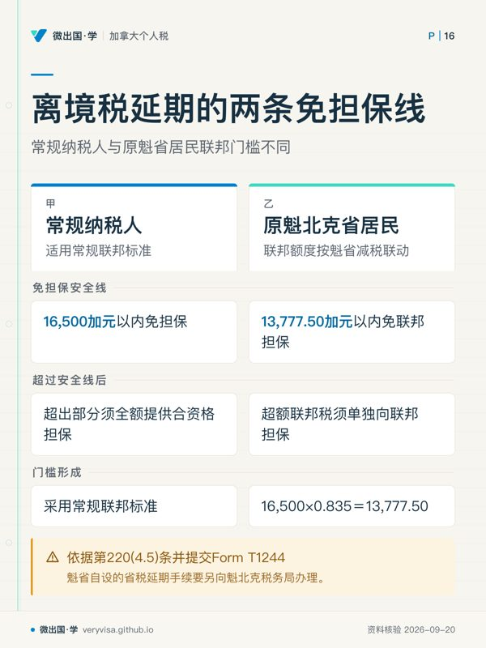

核实日期：2026-09-08｜现行口径：2026 税年（离境当年及非居民合规申报）｜复核：2027-01-31（离境税担保门槛、T1161 申报限额与清税扣缴率均为现行法定基准）。 法条依据指向加拿大《所得税法》(Income Tax Act, RSC 1985, c. 1 (5th Supp.)) 第 116 条、第 120 条、第 128.1 条、第 212 条（Part XIII）与第 220 条；数值指向加拿大税务局 (Canada Revenue Agency, CRA) 现行指南与信息通报。
在加拿大个人税务实务中，永久迁出加拿大并切断主要居住联系（Residential Ties）的过程，绝非仅仅在离境当年的 T1 税表第一页勾选「离境日期」那么简单。从纳税人正式成为非税务居民的那一刻起，其税法身份发生根本性裂变：税制管辖由「对税法居民的全球收入无限征税」骤降为「对非居民的加拿大来源收入有限征税」。为了防止资本利得与应税财产随同纳税人肉身出境而永久流失，加拿大《所得税法》在纳税人离境前沿与成为非居民之后的跨境交易两端，布设了极为严苛的合规防线。
许多纳税人甚至经验不足的从业者，在面对离境与非居民涉税业务时常常酿成重大失误：有的误以为只有欠税才需要申报财产清册，忽视了 Form T1161 资产申报表的法定强制门槛；有的面对高额离境税视同处置收益束手无策，不知道如何利用 Form T1244 申请免息延期纳税与评估联邦担保；更有买家在承接非居民出售的加拿大不动产时，盲目套用 25% 的统一扣缴成见，完全不知道可折旧建筑必须适用 50% 扣缴率，最终因未履行代扣代缴法定义务而被税务局追索巨额赔偿。
本页旨在为 2026 税年的离境人士与跨境税务专业人员提供一套权威、精准的操作指南。读完本页，你应该能够掌握四项核心合规能力：一是准确判定 Form T1161 财产清册的 25,000 加元门槛与 10,000 加元自用财产豁免界限；二是熟练掌握离境税延期纳税的申请路径，准确区分常规纳税人 16,500 加元与原魁省居民 13,777.50 加元的联邦免担保安全线；三是深刻剖析 Section 116 非居民不动产清税机制，准确区分非折旧资本财产 25% 与可折旧建筑 50% 的买方扣缴法定责任；四是精准推演非省内所得 48% 联邦附加税与自愿披露计划（VDP）在未提示（75% 利息减免）与被提示（25% 利息减免）下的救济差异。
38
一、制度设计：从全球征税转向来源征税的离境关口
1.1 离境税的本质：拟制处置与纳税悬崖
根据加拿大《所得税法》第 128.1(4)(b) 条，当一名自然人终止其加拿大税务居民身份时，税法拟制该纳税人在离境前一刻（Immediately Before Ceasing to be Resident），以公允市场价值（Fair Market Value, FMV）出售了其名下几乎所有的资本财产，并在成为非居民那一刻以相同公允价值重新购入。这一拟制处置被称为离境税（Departure Tax）。
离境税并非一项全新的税种，而是对未实现资本利得（Unrealized Capital Gains）的加速清算。虽然不动产（Taxable Canadian Property）、加拿大注册账户（如 RRSP、TFSA、RRIF）以及特定合资格小企业股份等通常免于在离境当天视同处置，但纳税人名下的非注册投资账户、海外股票、共同基金、私有企业股权、数字加密资产乃至艺术品收藏等，全部必须按离境当天的市场公允价值视同卖出，并在离境当年的出境申报表（Emigrant Return）中计算应税资本利得。
1.2 信息披露与税款延期的平衡设计
为了防止离境纳税人隐匿海外资产或低估处置收益，CRA 设计了「信息申报」与「税额清算」分离的双轨抓手： - 即使某些资产属于免于视同处置的范围，只要满足特定价值标准，纳税人仍必须在独立的信息表上全量披露，以锁定其成为非居民时的资产基础； - 如果因拟制处置产生巨额资本利得税、但纳税人并未实际变现资产导致现金流短缺，税法第 220(4.5) 条允许纳税人向税务局申请提供担保以延期纳税，直到资产未来真正被出售时再行交税。
二、Form T1161 移民离境财产清单申报门槛与豁免规则
在离境当年的申报中，纳税人必须提交 Form T1161《离境者拥有的财产清单》(List of Properties by an Emigrant to Report Remaining Interests in Property)（canada.ca）。该表属于纯粹的法定信息披露表（Information Return），其申报义务与纳税人是否产生应纳税额完全脱钩。
2.1 25,000 加元法定财产申报门槛
根据税法第 128.1(8) 条与 CRA 现行规范，在 2026 税年，判定一名离境纳税人是否必须提交 Form T1161 的基准法则如下： - 合计市值门槛 25,000 加元：纳税人在离境当天所拥有的全部财产，在排除法定免除列报财产之后，若剩余财产的公平市场价值（FMV）合计超过 25,000 加元，则该纳税人必须强制填报并提交 Form T1161。 - 法定免除计算的财产包括： 1. 现金（包括加拿大元与外币银行存款）； 2. 注册退休储蓄计划（RRSP）、注册退休收入基金（RRIF）、免税储蓄账户（TFSA）、首套住房储蓄账户（FHSA）等法定注册账户内的权益； 3. 任何价值低于法定标准的个人用途财产（Personal-use Property）。 - 重大逾期罚款警告：Form T1161 的法定递交截止日与离境当年的 T1 税表报税截止日完全一致（通常为离境次年的 4 月 30 日）。若未按期申报，税法第 162(7) 条设立了严苛的迟报罚款：每天 25 加元，最低 100 加元，最高可达 2,500 加元。许多离境人员即使由于没有应纳税款未遭追缴税金，仅因遗漏提交 T1161 就会被处以顶格两千五百加元的法定罚款。
2.2 10,000 加元单件自用财产单独列明界线
在统计纳税人的自用动产（如家具、家用电器、日常衣物、私家乘用车辆、珠宝首饰、艺术收藏品等）时，表单设立了免于逐项细分的保护线： - 单件自用财产免列上界（严格低于 10,000 加元）：任何单件公平市场价值严格低于 10,000 加元的个人自用财产，无需在 Form T1161 上逐项单独登记，也无需将其价值计入 25,000 加元的强制申报门槛测算中。 - 必须逐项申报的情形：一旦某一件个人自用财产（例如一辆豪华轿车、一块名贵腕表或一幅名家字画）在离境当天的公平市场价值达到或超过 10,000 加元，纳税人就必须在 T1161 表的相应类目中，单独逐项列明该资产的具体描述、获取日期以及离境当天的市场公允价值，并将其全额计入 25,000 加元的总资产池进行门槛比对。
三、离境税延期缴纳与联邦担保要求（Form T1244）
对于因拟制处置股票、基金或企业股权而产生大额税单的纳税人，加拿大《所得税法》第 220(4.5) 条提供了合法的延期缴纳机制。纳税人通过提交 Form T1244《个人选择延期缴纳离境税》(Election to Defer the Payment of Tax on Deemed Disposition of Property)，可向税务局申请推迟缴纳这部分离境税（canada.ca）。
3.1 延期纳税的基本原则：免息与担保
经 CRA 批准的离境税延期，属于免息延期（Interest-free Deferral）。在纳税人未来实际处置该资产、或者纳税人身故之前，延期的本金税额不会按季度复利累加欠税利息。然而，延期纳税的前提是纳税人必须向 CRA 提供足额、合资格的资产担保（Security），如加拿大金融机构开具的不可撤销信用证（Letter of Credit）、加拿大境内的不动产抵押或认可的股票资产质押。
3.2 联邦免担保法定豁免安全线：16,500 加元与 13,777.50 加元
为了降低普通中产家庭的合规成本，CRA 设立了一条小额税款免除提供担保的法定安全线： 1. 常规纳税人联邦担保门槛 16,500 加元：在 2026 税年，如果纳税人因视同处置财产所产生的联邦离境税净应纳税额不超过 16,500 加元，纳税人可以直接申请延期纳税，而无需向 CRA 提供任何形式的资产担保。只有当延期缴纳的联邦税额超过 16,500 加元时，纳税人才必须就超出部分的税额全额提供合资格担保。 2. 原魁北克省居民联邦担保门槛 13,777.50 加元：如果纳税人在离境前为魁北克省税务居民，由于魁省独立征收省级个人所得税并享有联邦魁省减税（Quebec Abatement 16.5%），联邦在测算这批离境人员的免担保阈值时，依法将常规标准按联邦减税系数进行联动折算： $$\$16,500 \times (1 - 16.5\%) = \$16,500 \times 0.835 = \$13,777.50$$ 因此，原魁省居民在向联邦申请离境税延期时，其无需向联邦提供担保的临界线为严格的 13,777.50 加元。超过该金额的联邦税额，必须单独向联邦提供担保，同时魁省自设的省税延期手续需另行向魁北克税务局（Revenu Québec）办理。
四、非居民预扣税与 Section 116 清税证明机制
当纳税人正式变更为非居民后，其在加拿大境内发生经济活动与处置不动产，即刻落入《所得税法》Part XIII 预扣税与 Section 116 清税程序的管辖（加拿大联邦法规库、Justice Canada）。
4.1 Part XIII 被动所得 25% 法定预扣税率
根据《所得税法》第 212 条（Part XIII），加拿大境内的实体或个人向非居民支付股息、租金、特许权使用费、退休金或信托分配等被动投资收益时，支付方负有法定扣缴义务： - 法定基准预扣率 25%：在没有双边税收协定特别降低税率的情形下，Part XIII 法定统一扣缴税率为 25%。该税款属于最终税（Final Tax），支付方必须在次月 15 日前汇缴给 CRA。 - 非居民出租物业业主若选择按净租金收益纳税，必须依据第 216 条在每年年初提交 Form NR6 并获得预扣豁免，方可按净利润申报 T1159，否则支付方或物业中介仍必须严格按毛租金的 25% 强制代扣。
4.2 Section 116 买方扣缴责任与财产性质拆分
当非居民出售加拿大境内的应税加拿大财产（Taxable Canadian Property, TCP）——典型代表为加拿大境内的土地与房屋不动产时，税法第 116 条确立了极其刚性的买方连带扣缴机制。非居民卖家必须向 CRA 申请清税证明（Certificate of Compliance, 俗称 Section 116 证书）。在卖家未向买家出示该证书前，买方被税法直接赋予代扣代缴的法定义务。

实务中存在极其危险的错误习惯，即不加区分地认为买方代扣一律按 25% 处理。税法对不动产性质进行了严格拆分，这一成见是实务爆雷的高发区：
- 一般非折旧资本财产买方责任率 25%：
- 根据《所得税法》第 116(5) 条，对于非居民出售的普通资本财产（如非居民名下的纯自用土地、农田、未开发地皮、或者主要资产为加拿大地产的私人公司未上市股票），若交割时卖家未取得清税证书，买方有权且必须从支付给卖家的总购房款（Gross Purchase Price）中直接代扣 25% 并暂扣在信托账户内。
- 特定可折旧应税财产买方责任率 50%：
- 根据《所得税法》第 116(5.3) 条，对于非居民处置的可折旧财产（Depreciable Property，例如长期出租的公寓楼、商业建筑、带租约的工业厂房等），法律规定的买方扣缴责任率高达 50%！
- 立法深层逻辑：可折旧财产在转让时，不仅会产生资本利得，还会释放过去年度计提的折旧提取（Recapture of Capital Cost Allowance, CCA）。折旧提取属于 100% 计入应税所得的普通商业/出租收益，最高边际税率远高于资本利得。为了防止非居民在卷款离境后留下一大笔折旧提取欠税烂摊子，税法强制规定对可折旧部分的建筑适用高达 50% 的代扣比率。
- 重大合规红线：买方律师在交收一套非居民持有的商业地产或出租物业时，必须在买卖合同中明确区分土地价值与建筑物价值。土地部分适用 25% 代扣，而地上建筑物可折旧部分必须严格适用 50% 代扣！买方若疏于核实将整宗交易一概按 25% 代扣，CRA 有权直接向买方本人追缴不足的税款差额及巨额滞纳金利息。
五、非省内所得附加税（S.120 Surtax）与自愿披露（VDP）救济
5.1 Section 120 非省内所得 48% 联邦附加税
当一名非居民、或者离境人员在离境后的日历年度内取得来自加拿大的应税经营所得、或处置加拿大不动产实现应税资本利得时，由于其在年底已不属于任何一个加拿大省份的税法居民，其收入无法向任何省级政府缴纳省所得税（加拿大联邦法规库）。 - 联邦替代性附加税 48%：根据《所得税法》第 120(1) 条，为了维护税制公平，加拿大对所有不归属于任何特定省份设立常设机构的加拿大应税所得，征收一项非省内所得联邦附加税（Federal Surtax on Income Not Earned in a Province）。 - 计算标准：该附加税严格按照纳税人计算出的基本联邦个人所得税（Basic Federal Tax）乘以 48% 计算。这笔 48% 的附加税与联邦基本税合并构成纳税人的最终所得税负，直接弥补了省级税收的空白。
5.2 自愿披露计划（VDP）在未提示与被提示下的救济差异
针对过去年度因不了解政策而遗漏申报 Form T1161、未交离境税、或者在海外未披露加拿大资产产生税务违规的纳税人，CRA 设立了自愿披露计划（Voluntary Disclosures Program, VDP）（CRA）。在 2026 税年，VDP 严格划分为两个类别，其利息与罚款的减免幅度存在天壤之别：
- 未提示申请（Unprompted Application / 常规通道）：75% 利息减免
- 算不算「未提示」，不是看 CRA 有没有发过信，而是看申请之前 CRA 是否已就这项不合规与你接触、或已掌握相关信息（包括第三方提供给 CRA 的信息）。CRA 群发的提醒、宣传类信件通常不会让此后的申请变成「被提示」。判定口径以 IC00-1R7 为准，详见本课《自愿披露 VDP》一讲。
- 救济幅度：纳税人可获得全部民事罚款的 100% 豁免（包括未申报海外财产的重大过失罚款与迟报罚款），免除刑事起诉；并且，对于申请日前 10 个日历年度内所欠税款的应计利息，CRA 通常批准给予高达 75% 的利息减免，纳税人仅需补缴所欠税本金与剩余 25% 的基础利息。
- 被提示申请（Prompted Application / 限制通道）：最高 25% 利息减免
- 如果纳税人是在已经收到 CRA 的合规调查问卷、审计通知、执法行动预警，或者纳税人知晓 CRA 已经通过跨境金融账户自动交换机制（CRS）获取了其海外资产信息后才匆忙补递申请，则该申请会被判定为「被提示申请」。
- 救济幅度：在该限制性通道下，纳税人无法免除重大过失罚款（Gross Negligence Penalties），税法仅允许其免除严重故意逃税的加征罚款；并且，对于欠税利息，CRA 通常批准的最高减免比例严格限制在 25% 以内，纳税人仍须承担 75% 的巨额累积利息。
六、综合案例推演与跨境合规实操流转
为了使离境合规与清税程序在实操中能够无缝衔接，以下梳理一个完整业务周期的推演模型：
实务案例：王女士于 2026 年 8 月 31 日永久离开温哥华迁居海外，正式终止加拿大税务居民身份。在离境当天，王女士名下资产如下： 1. 加拿大银行现金 50,000 加元； 2. TFSA 账户资产 60,000 加元； 3. 一批普通家具，单件均低于 3,000 加元，合计 FMV 8,000 加元； 4. 一辆私家轿车，离境当天 FMV 为 32,000 加元； 5. 非注册股票投资组合，成本 100,000 加元，离境当天 FMV 为 180,000 加元（未实现资本利得 80,000 加元）； 6. 温哥华一套出租公寓，土地成本 300,000 加元（FMV 500,000 加元），建筑折余成本（UCC）200,000 加元（FMV 400,000 加元），此前计提过 80,000 加元 CCA。
试剖析王女士在 2026 税年离境及后续出售公寓中的关键合规节点：
- Form T1161 申报判定：
- 现金 50,000 加元与 TFSA 60,000 加元属于法定免列财产，不计入门槛；
- 家具单件低于 10,000 加元，合计 8,000 加元免于逐项列示；
- 轿车单件价值 32,000 加元超过了 10,000 加元，必须逐项申报；
- 股票组合 FMV 180,000 加元与轿车 32,000 加元合计为 212,000 加元，远超 25,000 加元门槛。王女士必须在 2027 年 4 月 30 日前向 CRA 报送 Form T1161，否则将面临每天 25 加元、最高 2,500 加元的行政罚款。
- 离境税拟制处置与延期担保：
- 股票投资组合视同出售，实现 80,000 加元资本利得，产生约 15,000 加元联邦离境税。
- 由于产生的联邦税款低于 16,500 加元的法定担保门槛，王女士可递交 Form T1244 选择申请免息延期纳税，且无需向 CRA 抵押任何资产担保！
- 后续出售出租物业的 Section 116 买方扣缴：
- 若王女士次年以 900,000 加元总价出售该出租公寓且未提前取得清税证书：
- 土地部分公允价值 500,000 加元为非折旧财产，买方必须代扣 $\$500,000 \times 25\% = \$125,000$；
- 建筑物部分公允价值 400,000 加元属于可折旧财产，由于存在潜在的 80,000 加元折旧提取（Recapture），买方律师必须依法代扣 $\$400,000 \times 50\% = \$200,000$！
- 买方从总房款中合计扣缴 325,000 加元，绝不能仅按全盘 25% 扣缴 225,000 加元。
- 非省内所得附加税与漏报救济：
- 王女士最终通过 Section 116 最终税表结清资本利得与折旧提取时，由于非居民身份，其税款在联邦基础税之上加收 48% 的 Section 120 附加税。
- 若王女士此前在海外遗漏了申报，在 CRA 启动稽查前主动通过 VDP 未提示通道补报，可依法豁免全部民事迟报罚款并减免 75% 的累积利息。
通过全链条的制度推演可见，离境税务与非居民合规是一套环环相扣的高精密法律流程。任何在财产申报门槛、担保豁免界线或买方扣缴比例上的麻痹大意，都会触发极为沉重的法律惩戒。专业人员必须严守法条边界，确保每一步申报与资金扣缴均经得起税务机关的严格检验。
本页知识卡
不看正文也能拿到这一节的核心内容：先看导读，再看图。点图放大，左右翻页。
- 先看先把免除项与剩余财产分开，再判断是否落入强制申报。
- 易漏截止日通常为离境次年的 4 月 30 日；没有应纳税款也可能发生迟报罚款。
- 下一步到练习判断离境当天的财产是否达到申报条件。

- 先看先按单件市值选左栏或右栏，再横向看两项处理。
- 易漏右栏还要求列明具体描述、获取日期和离境当天的市场公允价值。
- 下一步到练习按单件公平市场价值逐项判断。

- 先看先辨认离境前是否属魁省税务居民，再看对应栏的免担保界线。
- 易漏容易错在把两套机关当成同一程序；原魁省居民还要分别办省税延期。
- 下一步去路线核对离境税延期步骤，并请持牌人士确认担保资产。